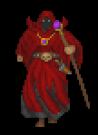

The arch-mage is a spell user who is able to learn and cast all types of
spells. He hearkens back to the days of the Arcane Lore, before magic was
divided.
Type: Pure Spell User
Skills: Spell User type skills
Spells: Arch-Mages get a little of everything.
Prime Attributes: Int, Wis
Comments: We rock!
Arch-Mage Members:
GuildMaster: Upstart
| High Mortal |
Expert |
Artisan |
Craftsman |
Journeyman |
Apprentice |
Novice |
| Upstart |
. |
Arctic |
Doomday |
Malachi |
Jastor |
Elrohir |
| . |
. |
Rechin |
. |
Shade |
Kyre |
Vehemence |
| . |
. |
Wombat |
. |
. |
Mrrlyn |
Ravnos |
| . |
. |
. |
. |
. |
Shivan |
Dirg |
| . |
. |
. |
. |
. |
Sym |
Praxis |
| . |
. |
. |
. |
. |
Pestilence |
Briggs |
| . |
. |
. |
. |
. |
Quickfire |
. |
| . |
. |
. |
. |
. |
. |
. |
Arch-Mage Council members are shown in BLUE.
How do I become an Arch-Mage?
1. If you have reincarnated and have an experience bank, it must contain
less than 5 levels.
2. You must be familiar with the contents of help
newbie, help combat, and
help spellsys. You will be asked questions
from these files.
If you feel that you meet the requirements above, and want to join, just
tell one of the Council members (listed in the table) and we'll let you
in...
Arch-Mage Visits

Started 7/23/96